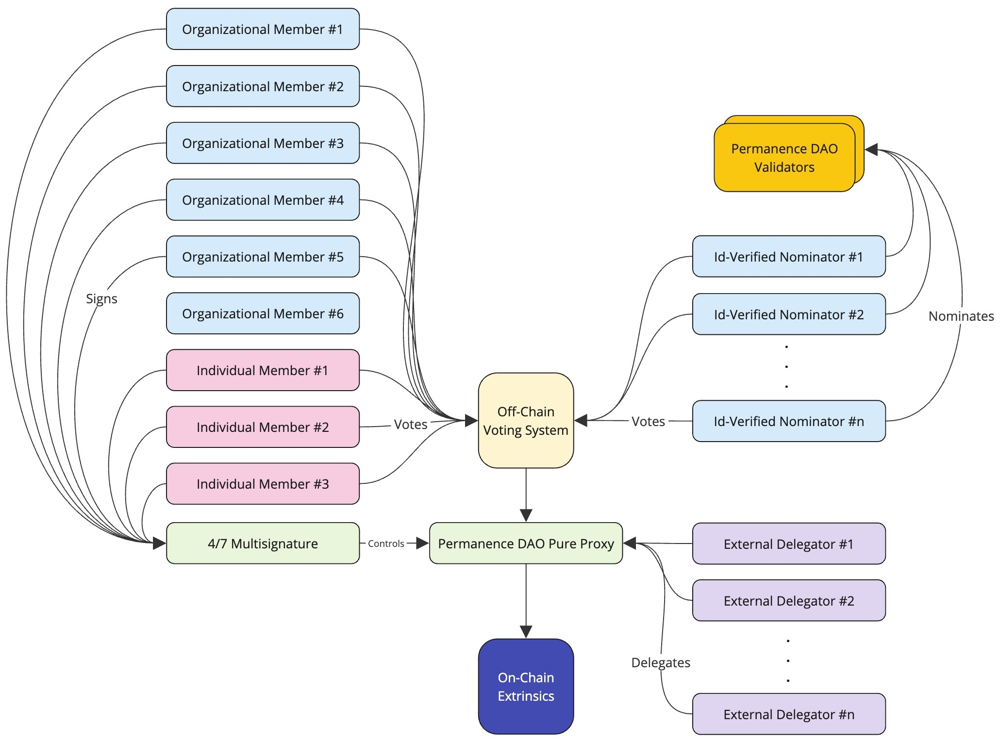
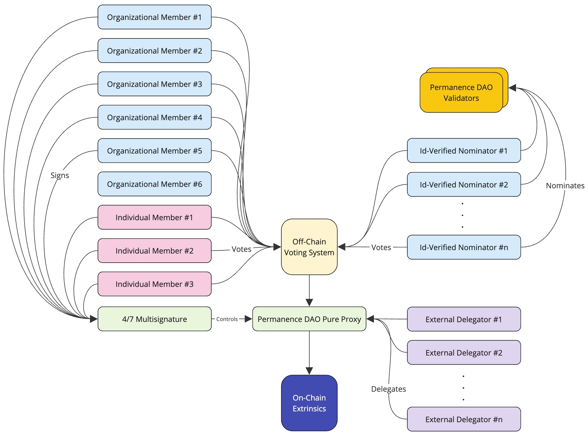
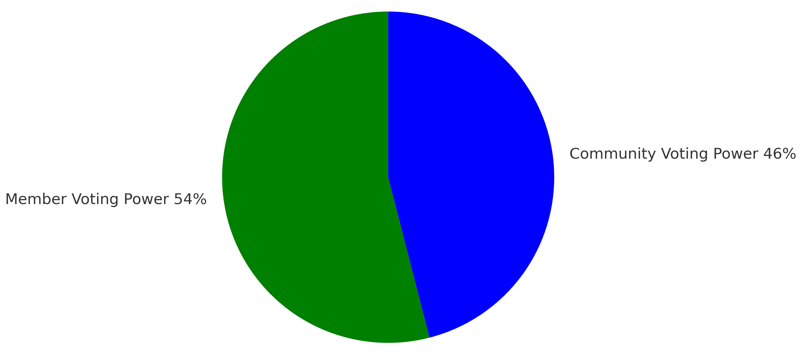
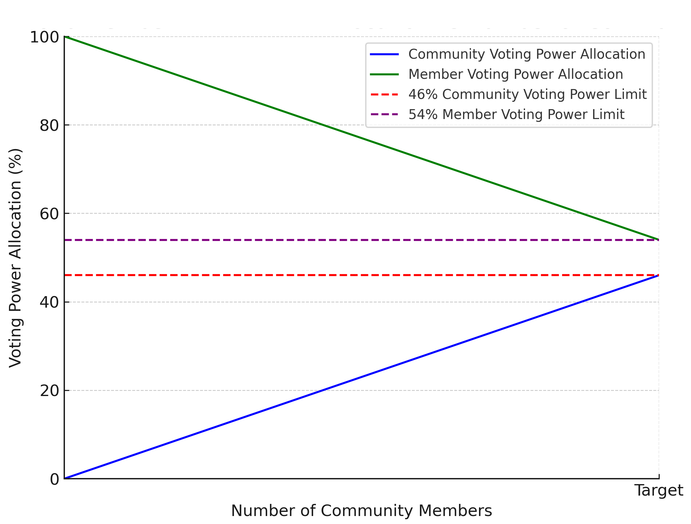

Permanence DAO
1. Introduction
Permanence DAO is a global collective of incorporated and individual entities active in Polkadot, committed to the growth of the network through value-based decision-making, envisioning and applying innovative solutions and driving adoption across various sectors. Members of Permanence DAO are:
- Helikon Labs (web, Twitter, GitHub)
- Polkadot Music Events Initiative (PMEI) (Twitter)
- The Ionian (Beckett)
- Polkadotters (web, Twitter)
- PolkaBiz (web, Twitter)
- Yongfeng Li (OpenSquare) (Twitter)
- EzioRed (Twitter)
- José Rabasso (Twitter)
- William (W1ZSPR3) (Twitter)
- Flez (Twitter)
DOT Delegation Address:
15ubZ...weKDVKSM Delegation Address:
EicAs...EPr9W2. Values
Permanence DAO conducts its operations and decisions in firm adherence to its founding values.
2.1 Integrity
We preserve our integrity through a strong commitment to our values, cultivating stability and reliability.
2.2 Transparency
We promote accountability and trust by focusing on transparency in our direction, decision-making, and resource management.
2.3 Neutrality
We are unbiased in our decision-making, evaluating opportunities primarily concerning the network’s well-being and long-term interests.
2.4 Merit
We seek merit and a proven track record in the teams and individuals we support or work with, incentivizing competence.
2.5 Sustainability
We acknowledge the unique value offered by the networks we operate in, and we work to sustain and enhance this value for the long term.
2.6 Creativity
We promote an environment where a multidisciplinary creative energy of arts, crafts, and technology flows freely and comes to fruition.
2.7 Openness
We remain flexible and open-minded, aiming for exploration through experimentation. We embrace criticism and challenge our assumptions.
3. Organization
Permanence DAO is founded by two organizational members, Helikon and PMEI. Initially, it consists of six organizational members and three individual members. The DAO is represented by its spokesperson and members in broadcasts and other public events. Member expansion, rotation, and mandates are determined through the DAO's internal discussions and voting process. Permanence DAO incentivizes its members to engage in OpenGov voting and discussions, as well as to produce material both in their respective fields and on broader governance topics.
Mario Schraepen is a serial SaaS entrepreneur with an IT background and he holds an MBA. For the past year, he has shifted his focus to Blockchain (LinkedCar - tokenization of vehicle data). He was one of the 4 founders who graduated with distinction from the Polkadot Blockchain Academy. (Hong Kong). Mario is a member of INATBA, MyData Global, 2Tokens, and different EU organizations. Mario is the co-author of the Industrial Task Force Report in the EU.
Christian Casini has been in the blockchain industry for several years, initially focusing on the SocialFi sector. Polkadot's technology and active developer community motivated him to join and build in the ecosystem. He completed the Polkadot Blockchain Academy Hong Kong cohort for the founders track. He was one of the 4 founders to graduate with distinction. He now focuses on the synergies between AI and blockchain technology.
3.a Founding Members
Helikon Labs, Istanbul
Helikon is a Polkadot-native blockchain software, infrastructure, and research company based in Istanbul. The company has been active in the ecosystem since 2021 and successfully delivered multiple software products and services (such as the SubVT suite, Chainviz, and followthedot.live) supported by the Kusama and Polkadot Treasuries, as well as the Web3 Foundation. Helikon is a RIPE member, a part of the Infrastructure Builders Program (IBP) and the Polkadot and Kusama Thousand Validators programs. Helikon is an active governance participant that also served as a Decentralized Voices delegate in the first cohort of the program.
PMEI, New York
PMEI is a business development agency focused on driving Polkadot adoption to both enterprise-level web2 and startup-phase web3 companies. The mission is to facilitate a full end-to-end music tech stack that lives on Polkadot, bridging liquidity and users from every corner of the music technology sector. PMEI is supported by the Web3 Foundation, a Decentralized Futures recipient, and supported by multiple cross-ecosystem builders who share a common ethos of creating more equitable outcomes for artists and fans.
3.b Organizational Members
The Ionian
Beckett is a postdoctoral researcher in chemistry based in the UK. He has been a Polkadot investor and supporter since 2021. Beckett has been following the governance decisions on Polkadot with great interest and believes an outsider's perspective could benefit the decision-making processes to represent the average user.
Polkadotters
Polkadotters are a Polkadot-native community, content creators, and proud infrastructure providers that have been part of the Polkadot family since 2020. They currently produce the weekly Polkadot Roundup for Polkadot's main Twitter account, actively participate in governance, and educate the community through monthly Governance News. They were also members of the 1st cohort of Decentralized Voices and continue to provide high-quality infrastructure for Polkadot and its ecosystem of parachains. Polkadotters are ambassadors and passionate promoters of the Polkadot ecosystem within the wider crypto community. They are members of several DAOs, including IBP (which provides public good infrastructure), United Bloc, and Permanence DAO.
PolkaBiz
PolkaBiz is a business accelerator that helps new Polkadot founders master the essential skills needed to build and launch products that drive real value to the ecosystem.Mario Schraepen is a serial SaaS entrepreneur with an IT background and he holds an MBA. For the past year, he has shifted his focus to Blockchain (LinkedCar - tokenization of vehicle data). He was one of the 4 founders who graduated with distinction from the Polkadot Blockchain Academy. (Hong Kong). Mario is a member of INATBA, MyData Global, 2Tokens, and different EU organizations. Mario is the co-author of the Industrial Task Force Report in the EU.
Christian Casini has been in the blockchain industry for several years, initially focusing on the SocialFi sector. Polkadot's technology and active developer community motivated him to join and build in the ecosystem. He completed the Polkadot Blockchain Academy Hong Kong cohort for the founders track. He was one of the 4 founders to graduate with distinction. He now focuses on the synergies between AI and blockchain technology.
3.c Individual Members
Yongfeng Li (OpenSquare)
Yongfeng founded OpenSquare, the company behind Subsquare, dotreasury, and Statescan. As an experienced developer and expert in the Polkadot governance system, he is currently focused on designing and developing products aimed at improving the usability of Polkadot.
EzioRed
Polkadot Head Ambassador, DV Cohort 2 for Polkadot. In the Polkadot ecosystem since 2021. Lawyer, former Cointelegraph Editor in Spanish, and Former Community Manager for Latin America and Spain at Parity Technologies. Co-founder of the Caracas Blockchain Week conference.
José Rabasso
José is both an artist and part engineer and has lived and worked on three continents. Before discovering the world of Blockchains, he was an Art and Creative Director servicing startups in Vancouver, Canada. He has been part of the network since its inception, actively contributing to various fields of activity from governance, to wiki translations, to organizing meetups and contributing to the validator set of both Polkadot and Kusama. Driven by the vision of decentralization, fueling a more equitable society.
William (W1ZSPR3)
William is a Head Ambassador for Polkadot. He was previously selected as a Decentralized Voice in the first cohort (Feb-May 2024), where he was delegated six million DOT by the Web 3 Foundation to make governance decisions for Polkadot. William was formerly the COO of Talisman where he brought an enterprise multisig to market (Polkadot Multisig). He holds an MBA and a bachelor's degree in Computer Science.
Flez
Flez is a seasoned entrepreneur and UI/UX designer with over 20 years of experience in web design, mobile applications, product development, and digital advertising. As curator of the Polkadot UX Bounty and the designer and project manager for the polkadot.cloud website, he helps shape and advance the Polkadot ecosystem. He co-founded Mantis Ad Network, a Web2 advertising platform that manages millions in annual media spend for advertisers and agencies, and brings his expertise to advancing Web3 technologies.
3.d KYB/KYC Mandate
Any member or organization involved in Permanence DAO will be required to KYC/ KYB for accountability.
3.e Engage-to-Retain Mandate
Every member or organization must explain their voting decision within a 'reasonable amount of time', which can be defined as within a timeframe that members have a chance to provide feedback before a voting period ends. Failure to adhere to this rule will result in a strike against the member, and after three strikes, the member will be removed from the DAO with an option to reapply only after 12 months.
4. Voting Philosophy
Permanence DAO evaluates treasury proposals on a per-case basis. By leveraging the diverse expertise, backgrounds, and perspectives of its professional members from fields such as business development, infrastructure, social sciences, software development, and the creative industries, the DAO aims to arrive at solid and fair evaluations of proposals. The DAO holds no rigid positions, making decisions with the short-, medium-, and long-term interests of the Polkadot ecosystem in mind. All members of Permanence DAO are deeply invested in the network's well-being, creating a strong parallel between their well-being and that of the network.
5. Operations
Permanence DAO allocates a share of its voting power to its community, which consists of ID-verified nominators of its validators.
To illustrate this voting model, we can consider a 54%-46% voting allocation. When the target number of community members is reached, 54% of the total voting power will be allocated to the members. Each of the nine members has equal voting power, contributing 6% each. The remaining 46% of the voting power is reserved for the community votes. As explained in the previous section, community members are ID-verified nominators of the Permanence DAO validators.

To illustrate this voting model, we can consider a 54%-46% voting allocation. When the target number of community members is reached, 54% of the total voting power will be allocated to the members. Each of the nine members has equal voting power, contributing 6% each. The remaining 46% of the voting power is reserved for the community votes. As explained in the previous section, community members are ID-verified nominators of the Permanence DAO validators.

6. Voting Model
Permanence DAO allocates a share of its voting power to its community, which consists of ID-verified nominators of its validators.
To illustrate this voting model, we can consider a 54%-46% voting allocation. When the target number of community members is reached, 54% of the total voting power will be allocated to the members. Each of the nine members has equal voting power, contributing 6% each. The remaining 46% of the voting power is reserved for the community votes. As explained in the previous section, community members are ID-verified nominators of the Permanence DAO validators.
Following the same example, community vote allocation starts at 0% when there are no community members, and converges to 46% as the number of community members (i.e. ID-verified nominators) approaches the target, which is to be determined through member discussions and forecast calculations.
To illustrate this voting model, we can consider a 54%-46% voting allocation. When the target number of community members is reached, 54% of the total voting power will be allocated to the members. Each of the nine members has equal voting power, contributing 6% each. The remaining 46% of the voting power is reserved for the community votes. As explained in the previous section, community members are ID-verified nominators of the Permanence DAO validators.

Example vote allocation between members and the community
Following the same example, community vote allocation starts at 0% when there are no community members, and converges to 46% as the number of community members (i.e. ID-verified nominators) approaches the target, which is to be determined through member discussions and forecast calculations.

12. Conclusion
By leveraging the diverse experience, backgrounds, and visions of its members, Permanence DAO is committed to delivering a fair, balanced delegation and continuous contribution to OpenGov that benefits the well-being and growth of the Polkadot ecosystem.